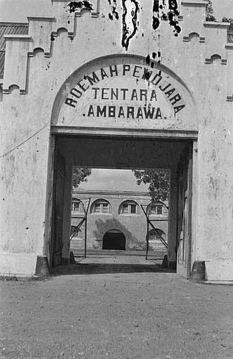

Palagan Ambarawa atau Pertempuran Ambarawa adalah pertempuran yang terjadi antara Tentara Nasional Indonesia yang baru saja dibentuk dan Angkatan Darat Britania Raya dengan pasukan Belanda yang terjadi antara 20 Oktober 1945 dan 15 Desember 1945 di Kabupaten Semarang dan Kabupaten Magelang di Jawa Tengah, Indonesia.
Di zaman modern, 15 Desember diperingati sebagai Hari Infanteri Nasional Indonesia.
Pada tanggal 19 Oktober 1945, pasukan Sekutu di bawah komando Letnan Kolonel Edwardes mendarat di Semarang untuk melucuti senjata pasukan Jepang dan membebaskan tawanan perang yang masih ditahan di kamp-kamp di Jawa Tengah. Awalnya, pasukan tersebut disambut baik oleh pihak Indonesia karena kehadiran mereka menghentikan serangan terhadap mereka oleh pasukan Jepang sebagai balasan atas pembantaian sekitar 200 warga sipil Jepang yang dipenjara oleh "ekstremis" Indonesia di dekat Semarang. Pasukan tersebut diperintahkan untuk tetap netral dalam "masalah politik". Dalam sebuah pertemuan dengan Gubernur Jawa Tengah Wongsonegoro, dicapai kesepakatan bahwa polisi Indonesia akan diizinkan untuk menyimpan senjata mereka, tetapi warga sipil akan dilucuti senjatanya. Sebagai imbalannya, mereka setuju untuk menyediakan bahan makanan dan kebutuhan lainnya untuk kelancaran tugas Sekutu, sementara Sekutu berjanji untuk tidak mengganggu kedaulatan pemerintah saat itu.
Namun, ketika pasukan Sekutu dan NICA mulai membebaskan dan mempersenjatai tawanan perang Belanda yang dibebaskan di Ambarawa dan Magelang, banyak penduduk setempat yang marah. Hubungan semakin memburuk ketika Sekutu mulai melucuti senjata anggota Tentara Nasional Indonesia. Resimen Kedu Tengah 1 di bawah komando Letnan Kolonel M. Sarbini mulai mengepung pasukan Sekutu yang ditempatkan di Magelang sebagai balasan atas upaya pelucutan senjata mereka. Presiden Indonesia Soekarno campur tangan dalam situasi tersebut untuk meredakan ketegangan, dan Sekutu secara diam-diam meninggalkan Magelang ke benteng mereka di Ambarawa. Resimen Sarbini mengikuti Sekutu dalam pengejaran, dan kemudian bergabung dengan pasukan Indonesia lainnya dari Ambarawa, Suruh, dan Surakarta. Mundurnya pasukan Sekutu terhenti di Desa Jambu karena dihadang oleh pasukan Angkatan Muda di bawah pimpinan Oni Sastrodihardjo. Pasukan Sekutu kemudian diusir dari Desa Jambu oleh pasukan gabungan Tentara Nasional Indonesia.
Di Desa Ngipik, pasukan Sekutu kembali dicegat oleh Batalion 1 Soerjosoempeno di Ngipik dan dipaksa mundur lagi oleh Tentara Nasional Indonesia, setelah berusaha menguasai dua desa di sekitar Ambarawa. Pasukan Indonesia di bawah komando Letnan Kolonel Isdiman mencoba membebaskan kedua desa tersebut, tetapi Isdiman tewas dalam pertempuran sebelum bala bantuan tiba. Sejak kematian Letnan Kolonel Isdiman, Panglima Divisi 5 Banyumas, Kolonel Soedirman merasa kehilangan salah satu perwira terbaiknya dan dia segera turun ke medan untuk memimpin pertempuran. Kolonel Soedirman, bersumpah untuk membalas kematian Isdiman dan memanggil bala bantuan untuk mengepung posisi Sekutu di Jawa Tengah. Tanpa sepengetahuan prajuritnya, ia telah terpilih sebagai Panglima Angkatan Perang pada tanggal 12 November secara in absentia, karena ia masih bersama divisinya.
Pertempuran
Pada pagi hari tanggal 23 November 1945, pasukan Indonesia mulai menembaki pasukan Sekutu yang ditempatkan di Ambarawa. Serangan balik dari Sekutu memaksa Tentara Nasional Indonesia mundur ke Desa Bedono.
Pada tanggal 11 Desember 1945, Soedirman mengadakan pertemuan dengan beberapa komandan Angkatan Darat. Keesokan harinya pada pukul 4:30 pagi, Angkatan Darat melancarkan serangan terhadap Sekutu di Ambarawa. Artileri Indonesia menggempur posisi Sekutu, yang kemudian diserbu oleh infanteri. Ketika jalan raya Semarang-Ambarawa direbut oleh pasukan Indonesia, Soedirman segera memerintahkan pasukannya untuk memotong jalur pasokan pasukan Sekutu yang tersisa dengan menggunakan manuver penjepit. Kehadiran Kolonel Soedirman memberikan semangat baru bagi pasukan Indonesia. Koordinasi terjalin antar komando sektor dan pengepungan terhadap musuh semakin ketat. Taktik yang diterapkan adalah serangan dadakan secara serentak di semua sektor. Bala bantuan terus berdatangan dari Yogyakarta, Surakarta, Salatiga, Purwokerto, Magelang, Semarang, dan lain-lain. Pertempuran berakhir empat hari kemudian pada tanggal 15 Desember 1945, ketika Indonesia berhasil menguasai kembali Ambarawa dan Sekutu mundur ke Semarang.
Akibat
Hanya tiga hari setelah kemenangan, Soedirman dipromosikan menjadi mayor jenderal dan pemilihannya sebagai Panglima Besar Tentara Keamanan Rakyat (TKR), yang berlaku surut sejak tanggal 12 November, dikukuhkan, menggantikan Oerip Soemohardjo, pemimpin sementara angkatan perang, yang ditunjuk sebagai kepala staf.